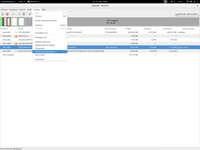
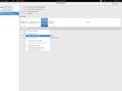

Labels
Dieser Artikel wurde für die folgenden Ubuntu-Versionen getestet:
Dieser Artikel ist größtenteils für alle Ubuntu-Versionen gültig.
Zum Verständnis dieses Artikels sind folgende Seiten hilfreich:
Als Dateisystem-Label (oder kurz: Label) wird in diesem Artikel eine für Menschen verständliche Bezeichnung für ein Dateisystem verstanden. Solche Bezeichnungen erleichtern die Unterscheidung zwischen den Dateisystemen in verschiedenen Partitionen auf Festplatten, Speicherkarten oder anderen Datenträgern. Desktops zeigen eingehängte Partitionen mit dem Label des darin befindlichen Dateisystems an und nicht mit einer erfundenen Bezeichnung oder dem Einhängepunkt.
Neben dem Label eines Dateisystems kann man auf Datenträgern mit GPT auch jede Partition unabhängig von dem in der Partition installiertem oder auch fehlendem Dateisystem benennen (GPT-Partition-Label). Ein GPT-Partition-Label wird direkt in der Partitionstabelle gespeichert; hierfür stehen 128 Octets zur Verfügung.
BSD-Systeme verstehen unter der Bezeichnung Disklabel eine spezielle Partitionierungmethode für einen Datenträger. Dies wird hier nicht weiter behandelt. Manche Programme, z.B. GParted und GRUB, verwenden in einigen Bedientexten und Fehlermeldungen das Wort "label" im Sinne von "disklabel" und meinen damit die Partitionstabelle; in anderen Texten meinen sie aber mit "label" ein Dateisystem-Label oder GPT-Partition-Label.
Dateisystem-Label und GPT-Partition-Label sind optional. Es gibt verschiedene Möglichkeiten solche Label zu setzen bzw. zu ändern. Dateisystem-Label können bereits beim Formatieren bzw. beim Anlegen eines Dateisystems definiert werden. Abhängig von der Art des Dateisystems müssen ggf. noch spezielle Pakete gemäß folgender Tabelle installiert [1] werden.
Achtung!
Die hier vorgestellten Programme erlauben teilweise über die Verwaltung von Labels hinaus weitreichende Änderungen an Dateisystemen und Partitionen. Die Programme können bei unsachgemäßer Verwendung Datenverlust verursachen, indem der Zugriff auf alle Daten in einer Partition oder sogar auf alle Daten auf einem Datenträger verloren geht! Dies betrifft die Programme parted bzw. GParted, gdisk, cgdisk, sgdisk, tune2fs, reiserfstune, jfs_tune und xfs_admin.
Label über eine grafische Oberfläche bearbeiten¶

alle Desktops¶
Das Programm GParted bietet u.a. die Möglichkeit, Labels zu setzen oder zu ändern. Hierzu den Datenträger und die Partition auswählen. Im Menü Partition oder auch im Kontextmenü des ausgewählten Eintrags (über die sekundäre (meist rechte) Maustaste  erreichbar) findet man die Menüpunkte „Dateisystem bezeichnen“ und „Partition benennen“. Über „Dateisystem bezeichnen“ kann man das Dateisystem-Label und über „Partition benennen“ das GPT-Partition-Label bearbeiten.
erreichbar) findet man die Menüpunkte „Dateisystem bezeichnen“ und „Partition benennen“. Über „Dateisystem bezeichnen“ kann man das Dateisystem-Label und über „Partition benennen“ das GPT-Partition-Label bearbeiten.

GNOME¶
Beim GNOME-Desktop steht das Programm Laufwerksverwaltung bzw. Laufwerke (original: "gnome-disks") zur Verfügung. Dieses enthält hinter der Taste mit dem Getriebe ein Menü mit u.a. den Menüpunkten „Partition bearbeiten …“ und „Dateisystem bearbeiten …“, über die auch die Bearbeitung des GPT-Partition-Labels bzw. des Dateisystem-Labels möglich ist.
KDE¶
Bei Kubuntu gibt es den Partitionmanager, der in den Desktop KDE integriert ist und unter "Partitionsmanager" in den Systemeinstellungen aufrufbar ist. Das Programm muss aber erst installiert werden.
Label im Terminal anzeigen¶
Der Befehl [2]:
sudo blkid
zeigt wichtige Informationen über alle angeschlossenen Dateisysteme an. Unter LABEL= findet man jeweils das Dateisystem-Label und unter PARTLABEL= das GPT-Partition-Label.
Alternativ kann auch lsblk verwendet werden:
lsblk -o+label,partlabel lsblk -o+label # zeigt Dateisystem-Label lsblk -o+partlabel # zeigt GPT-Partition-Label lsblk -f # alternative Ausgabe inkl. Dateisystem-Label lsblk -f -o+partlabel # alternative Ausgabe inkl. Dateisystem-Label und GPT-Partition-Label
Hier sieht man auch verfügbare, aber noch nicht eingebundene Dateisysteme.
Möglichkeiten zur selektiven Anzeige des Labels für ein einzelnes Dateisystem enthält die folgende Tabelle.
Label im Terminal bearbeiten¶
Dateisystem-Label¶
Hinweis:
Möchte man das Dateisystem-Label ändern, muss die betreffende Partition ausgehängt werden (z.B. über "Laufwerksverwaltung -> Entsprechendes Speichergerät -> Datenträger aushängen").
Die Laufwerksbezeichnung (z.B. /dev/sda1) muss der tatsächlichen Bezeichnung angepasst werden.
| Dateisystem | Benötigtes Paket | Label setzen [2] | Label anzeigen |
| alle | util-linux | lsblk -n -o label /dev/sda1 | |
| ext2/ext3/ext4 | e2fsprogs | sudo e2label /dev/sda1 NEUES_LABEL sudo tune2fs -L NEUES_LABEL /dev/sda1 | sudo e2label /dev/sda1 sudo tune2fs -l /dev/sda1 |
| ReiserFS | reiserfsprogs | sudo reiserfstune -l NEUES_LABEL /dev/sda1 | sudo debugreiserfs |
| JFS | jfsutils | sudo jfs_tune -L NEUES_LABEL /dev/sda1 | sudo jfs_tune -l |
| XFS | xfsprogs | xfs_admin -L NEUES_LABEL /dev/sda1 | xfs_admin -l |
| FAT | dosfstools | sudo fatlabel /dev/sdb1 NEUES_LABEL | sudo fatlabel /dev/sdb1 |
| FAT | mtools | sudo mlabel -i /dev/sdb1 ::NEUES_LABEL | sudo mlabel -i /dev/sdb1 -s :: |
| FAT | mtools und Skript (siehe unten) | sudo ./set_msdos_label.sh /dev/sdb1 NEUES_LABEL | |
| NTFS | ntfs-3g (ab Ubuntu 11.10) | sudo ntfslabel /dev/sdb1 NEUES_LABEL | sudo ntfslabel /dev/sdb1 |
| Swap | util-linux | sudo swaplabel -L NEUES_LABEL /dev/sda1 | sudo swaplabel /dev/sda1 |
Besonderheiten bei FAT und NTFS¶
Bei FAT-Dateisystemen wird im Extended-Bios-Parameter-Block ein weiteres Label gespeichert. Bei sehr alten FAT-Dateisystemen (älter als FAT16B, 1987, MS-DOS vor 3.31) kann das Programm von dosfstools dieses zusätzliche Label nicht richtig bearbeiten und es kann das im Anhang beschriebene Skript für mtools ggf. besser funktionieren.
Beim mtools-Befehl mlabel darf nach „
::“ kein Leerzeichen stehen!Der Befehl mlabel kann eine Fehlermeldung in der Art
Total number of sectors not a multiple of sectors per track!
verursachen; in diesem Fall muss man nach dem Befehl
echo mtools_skip_check=1 >> ~/.mtoolsrc
den mlabel-Befehl wiederholen.
Bei wechselseitiger Verwendung eines FAT- oder NTFS-Dateisystems unter Linux und anderen Betriebssystemen (FreeDOS und andere DOS-Varianten, MS-Windows) muss für die Interoperabilität beachtet werden: Ein Dateisystem-Label ist ein spezieller Eintrag eines Dateinames in das Wurzelverzeichnis des Dateisystems; daher gelten hier für die zulässigen Zeichen die spezifischen Regeln der Betriebsysteme. Zusätzlich ist zu beachten, dass die Betriebssysteme unterschiedliche Codierungen für die Dateinamen verwenden. Man sollte daher für Label nur Großbuchstaben, Ziffern und die bei MS-Windows für Dateinamen erlaubten Sonderzeichen aus dem ASCII-Bereich 32-127 verwenden, siehe dosfstools.
GPT-Partition-Label¶
Zur Bearbeitung des GPT-Partition-Labels kann man die Programme gdisk, cgdisk und sgdisk verwenden.
gdisk arbeitet interaktiv im Textmodus:
sudo gdisk /dev/sdX # X durch Kennbuchstaben des gemeinten Datenträgers ersetzen!
Eine Anzeige der Partitions-Eigenschaften, inkl. des GPT-Partition-Labels erhält man über den Befehl i mit anschließender Eingabe der Partitionnummer; das GPT-Partition-Label ändern kann man mit dem Befehl c.
cgdisk arbeitet interaktiv unter Verwendung der NCURSES-Bibliothek. Zur Änderung des GPT-Partition-Label der selektierten Parttion werwendet man die Befehlsauswahl [naMe].
sudo cgdisk /dev/sdX # X durch Kennbuchstaben des gemeinten Datenträgers ersetzen!
sgdisk wird mit einem speziellen Skript zur Anpassung der Partitionstabelle verwendet.
Bei diesen Programmen werden Änderungen erst wirksam nach dem Schreiben der Partitionstabelle.
Label in der Praxis verwenden¶
Dateisystem-Label sind nützlich zur Anzeige von zusätzlichen Dateisystemen bei Desktop-Systemen. Hier werden dann die für Menschen sinnvollen Bezeichnungen verwendet anstelle von z.B. „Datenträger 17GB“.
Man kann in der Datei /etc/fstab die Partitionen auch über die Label identifizieren, beispielsweise:
# /etc/fstab: static file system information. #[…] LABEL=Artful\040Aardvark /mnt/Artful\040Aardvark auto nosuid,nodev,nofail,noauto 0 0 PARTLABEL=Artful\040Aardvark\040Ubuntu\04017.10 /mnt/Artful\040Aardvark auto nosuid,nodev,nofail,noauto 0 0
(Man beachte die oktale Notierung „\040“ für Leerzeichen!) Dies ist eine Alternative für die Identifizierung über UUID.
Mit entsprechender Vorbereitung in der Datei /etc/fstab kann man Befehle dieser Art zur Einbindung von Datenträgern benutzen:
mount LABEL="Artful Aardvark" mount PARTLABEL="Artful Aardvark Ubuntu 17.10"
Dies ist nützlich z.B. bei USB-Festplatten, die an wechselnden Rechnern benutzt werden, aber trotz ggf. wechselnder Gerätedatei immer mit demselben Befehl eingebunden werden können. Das funktioniert genauso wie unter Verwendung von UUID, ist aber bei sinnvoll gewähltem Label freundlicher für den Bediener. Siehe auch Externe Laufwerke statisch einbinden.
GRUB kann den zu startenden Kernel auch durch die Suche nach einem Dateisystem-Label (nicht: GPT-Partition-Label) finden.
Beim Anlegen einer Partitionstabelle mit Partitionen zur Vorbereitung eines frischen Datenträgers für die Installation eines Betriebssystems kann man die gewünschte Partition mit einem Label markieren. Man erhält so eine zusätzliche Orientierung zur Identifizierung der richtigen Platte/der richtigen Partition auch nach einem Wechsel der Gerätedatei.
Dokumentation¶
Eine weiterführende Dokumentation ist in den Manpages zu blkid, lsblk, parted, gparted, gnome-disks, e2label, tune2fs, fatlabel, swaplabel, gdisk, cgdisk und sgdisk zu finden.
Anhang: Skript für mtools¶
Zu beachten: Das Skript set_msdos_label.sh eignet sich nur für FAT-Dateisysteme!
Für FAT kann man das Skript set_msdos_label.sh  benutzen, welches im Forum entstanden ist. Vor der Benutzung müssen noch die Ausführrechte gesetzt werden [3].
benutzen, welches im Forum entstanden ist. Vor der Benutzung müssen noch die Ausführrechte gesetzt werden [3].
Links¶
Rename USB Drives
 - gilt auch für andere externe Datenträger wie USB-Festplatten oder SD-Karten
- gilt auch für andere externe Datenträger wie USB-Festplatten oder SD-Karten

- Erstellt mit Inyoka
-
 2004 – 2017 ubuntuusers.de • Einige Rechte vorbehalten
2004 – 2017 ubuntuusers.de • Einige Rechte vorbehalten
Lizenz • Kontakt • Datenschutz • Impressum • Serverstatus -
Serverhousing gespendet von